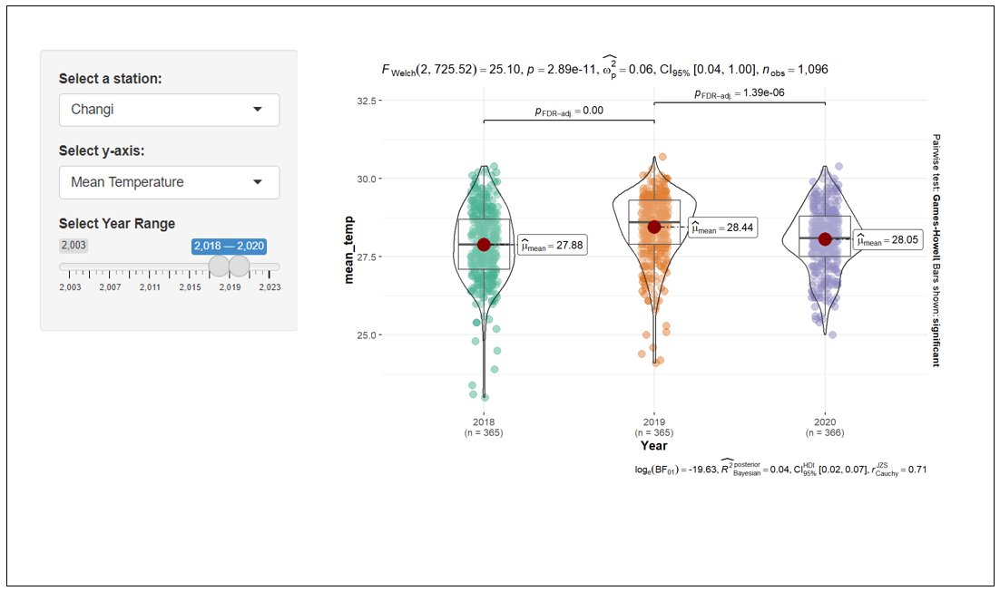
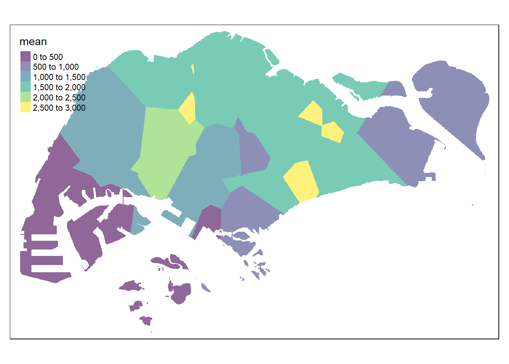
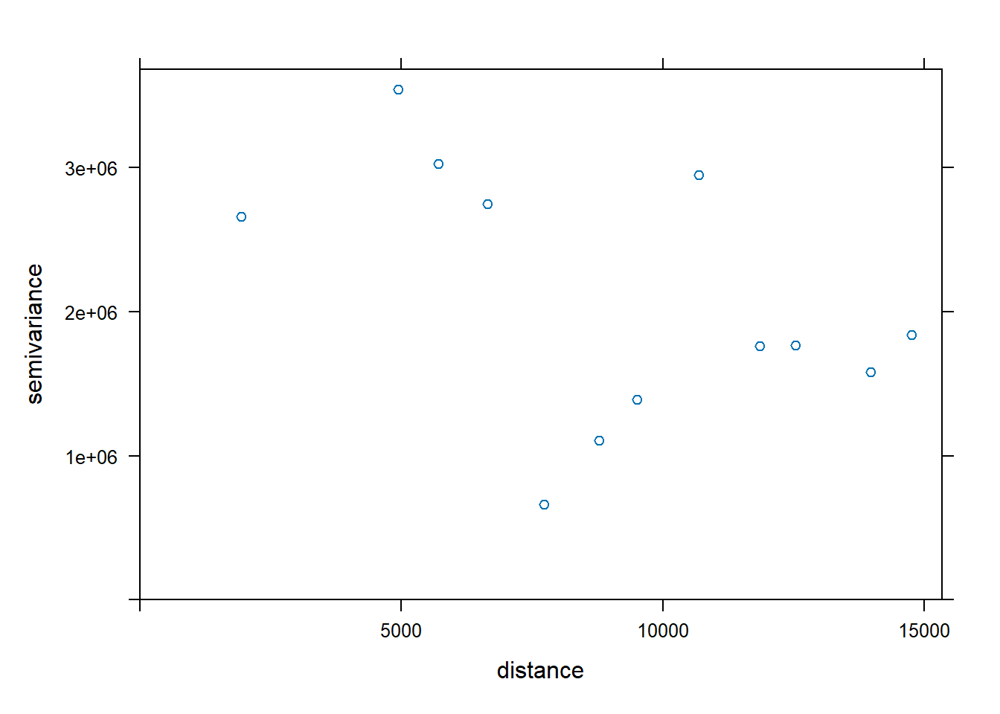
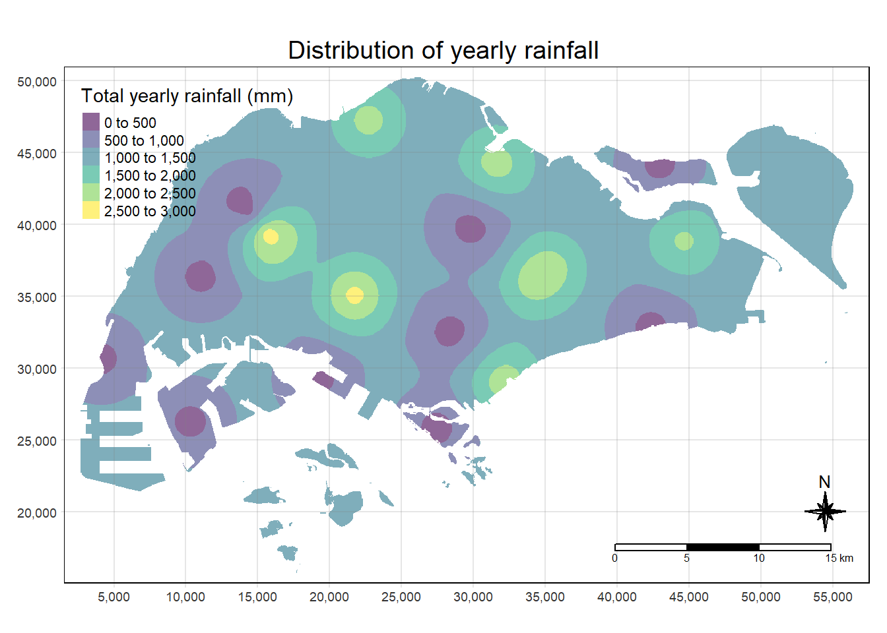
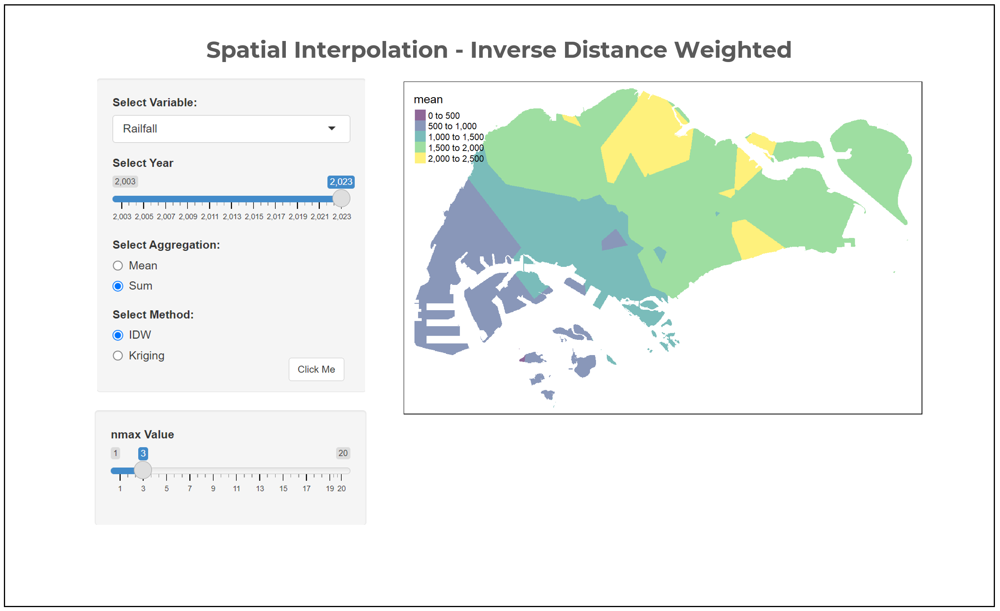
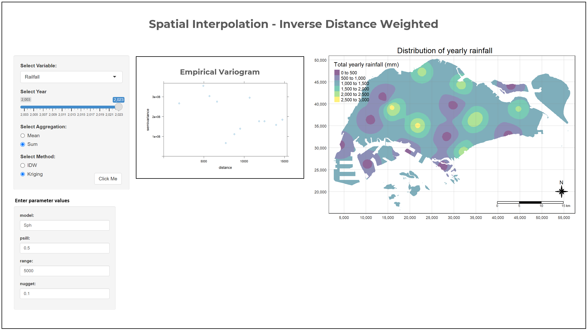
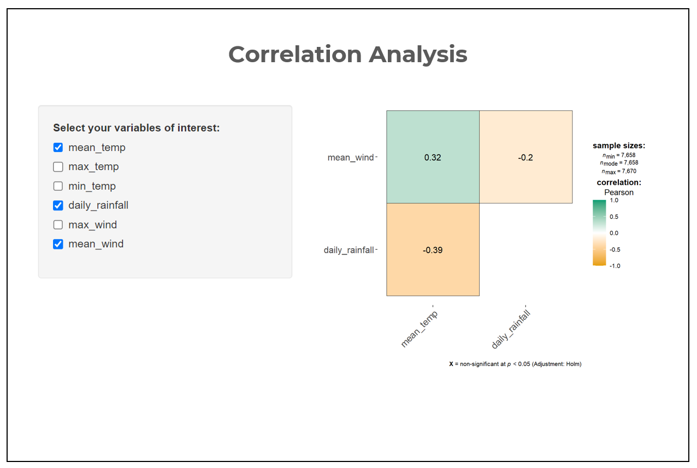

pacman::p_load(tidyverse, ggiraph, ggstatsplot, patchwork, ggthemes, sf, terra, gstat, automap, tmap, viridis, zoo)EDA
1 Installing and launching the required R packages
2 Importing the data
climate_data <- read_csv("data/clean_climate_data.csv")Rows: 111434 Columns: 13
── Column specification ────────────────────────────────────────────────────────
Delimiter: ","
chr (1): Station
dbl (12): Year, Month, Day, daily_rainfall, highest_30m_rainfall, highest_60...
ℹ Use `spec()` to retrieve the full column specification for this data.
ℹ Specify the column types or set `show_col_types = FALSE` to quiet this message.3 Oneway ANOVA Test
#Inputs for prototyping
input_station <- "Changi"
input_msmt <- "mean_temp"
start_year <- 2018
end_year <- 2020
input_year <- seq(start_year, end_year)
input_data <- climate_data %>%
select('Station','Year','Month','Day',input_msmt)%>%
filter(Station == input_station,
Year %in% input_year)Warning: Using an external vector in selections was deprecated in tidyselect 1.1.0.
ℹ Please use `all_of()` or `any_of()` instead.
# Was:
data %>% select(input_msmt)
# Now:
data %>% select(all_of(input_msmt))
See <https://tidyselect.r-lib.org/reference/faq-external-vector.html>.ggbetweenstats(
data = input_data,
x = Year,
y = !!rlang::sym(input_msmt),
type = "p",
mean.ci = TRUE,
pairwise.comparisons = TRUE,
pairwise.display = "s",
p.adjust.method = "fdr",
messages = FALSE
)Warning in min(x): no non-missing arguments to min; returning InfWarning in max(x): no non-missing arguments to max; returning -Inf
The UI

4 Spatial Interpolation
#Importing the station data
stations <- read_csv("data/aspatial/RainfallStation.csv")Rows: 63 Columns: 3
── Column specification ────────────────────────────────────────────────────────
Delimiter: ","
chr (1): Station
dbl (2): Latitude, Longitude
ℹ Use `spec()` to retrieve the full column specification for this data.
ℹ Specify the column types or set `show_col_types = FALSE` to quiet this message.#Inputs for prototyping
input_year <- 2023
input_msmt <- "daily_rainfall"
input_agg <- "sum"
#Preparing the input data
input_data <- climate_data %>%
select('Station','Year','Month','Day',input_msmt)%>%
filter(Year == input_year)
rfdata <- input_data%>%
select(c(1,5))%>%
group_by(Station)%>%
summarise(year_agg = switch(input_agg,
sum = sum(!!rlang::sym(input_msmt)),
mean = mean(!!rlang::sym(input_msmt))
))%>%
mutate(
year_agg = ifelse(is.na(year_agg), 0, year_agg)
)%>%
ungroup()
#Converting aspatial data into geospatial data
rfdata <- rfdata %>%
left_join(stations)Joining with `by = join_by(Station)`rfdata_sf<- st_as_sf(rfdata,
coords = c("Longitude", "Latitude"),
crs = 4326)%>%
st_transform(crs = 3414)
#Importing planning subzone boundary data
mpsz2019 <- st_read(dsn = "data/geospatial", layer = "MPSZ-2019")%>%
st_transform(crs = 3414)Reading layer `MPSZ-2019' from data source
`C:\hci2024\ISSS608-VAA\Take-home_Ex\Project_prototype\data\geospatial'
using driver `ESRI Shapefile'
Simple feature collection with 332 features and 6 fields
Geometry type: MULTIPOLYGON
Dimension: XY
Bounding box: xmin: 103.6057 ymin: 1.158699 xmax: 104.0885 ymax: 1.470775
Geodetic CRS: WGS 84Inverse Distance Weighted
#Inputs for prototyping
input_nmax <- 3
grid <- terra::rast(mpsz2019,
nrows = 690,
ncols = 1075)
xy <- terra::xyFromCell(grid,
1:ncell(grid))
coop <- st_as_sf(as.data.frame(xy),
coords = c("x", "y"),
crs = st_crs(mpsz2019))
coop <- st_filter(coop, mpsz2019)
res <- gstat(formula = year_agg ~ 1,
locations = rfdata_sf,
nmax = input_nmax,
set = list(idp = 0))
resp <- predict(res, coop)[inverse distance weighted interpolation]resp$x <- st_coordinates(resp)[,1]
resp$y <- st_coordinates(resp)[,2]
resp$pred <- resp$var1.pred
pred <- terra::rasterize(resp, grid,
field = "pred",
fun = "mean")
tmap_options(check.and.fix = TRUE)
tmap_mode("plot")tmap mode set to plottingtm_shape(pred) +
tm_raster(alpha = 0.6,
palette = "viridis")
Kriging
v <- variogram(year_agg ~ 1,
data = rfdata_sf)
plot(v)
#Inputs for prototyping
input_model <- "Sph"
input_psill <- 0.5
input_range <- 5000
input_nugget <- 0.1
fv <- fit.variogram(object = v,
model = vgm(
psill = input_psill,
model = input_model,
range = input_range,
nugget = input_nugget))Warning in fit.variogram(object = v, model = vgm(psill = input_psill, model =
input_model, : No convergence after 200 iterations: try different initial
values?k <- gstat(formula = year_agg ~ 1,
data = rfdata_sf,
model = fv)
resp <- predict(k, coop)[using ordinary kriging]resp$x <- st_coordinates(resp)[,1]
resp$y <- st_coordinates(resp)[,2]
resp$pred <- resp$var1.pred
resp$pred <- resp$pred
kpred <- terra::rasterize(resp, grid,
field = "pred")
tmap_options(check.and.fix = TRUE)
tmap_mode("plot")tmap mode set to plottingtm_shape(kpred) +
tm_raster(alpha = 0.6,
palette = "viridis",
title = "Total yearly rainfall (mm)") +
tm_layout(main.title = "Distribution of yearly rainfall",
main.title.position = "center",
main.title.size = 1.2,
legend.height = 0.45,
legend.width = 0.35,
frame = TRUE) +
tm_compass(type="8star", size = 2) +
tm_scale_bar() +
tm_grid(alpha =0.2)
The UI
The user select all required values from the first panel and click on the button. If IDW is selected, the user can change the model parameter nmax value to generate different surface map. If Kriging is selected, a empirical variogram will be shown, and the user can decide the model parameters - psill, model, range, nugget according to the variogram shown.


5 Correlation
#Inputs for prototyping
input1 <- "mean_temp"
input2 <- "daily_rainfall"
input3 <- "mean_wind"
cor_data <- climate_data %>%
select(input1, input2, input3)Warning: Using an external vector in selections was deprecated in tidyselect 1.1.0.
ℹ Please use `all_of()` or `any_of()` instead.
# Was:
data %>% select(input1)
# Now:
data %>% select(all_of(input1))
See <https://tidyselect.r-lib.org/reference/faq-external-vector.html>.Warning: Using an external vector in selections was deprecated in tidyselect 1.1.0.
ℹ Please use `all_of()` or `any_of()` instead.
# Was:
data %>% select(input2)
# Now:
data %>% select(all_of(input2))
See <https://tidyselect.r-lib.org/reference/faq-external-vector.html>.Warning: Using an external vector in selections was deprecated in tidyselect 1.1.0.
ℹ Please use `all_of()` or `any_of()` instead.
# Was:
data %>% select(input3)
# Now:
data %>% select(all_of(input3))
See <https://tidyselect.r-lib.org/reference/faq-external-vector.html>.cor_data <- na.omit(cor_data)
ggstatsplot::ggcorrmat(
data = cor_data,
cor.vars = 1:ncol(cor_data))
The UI
